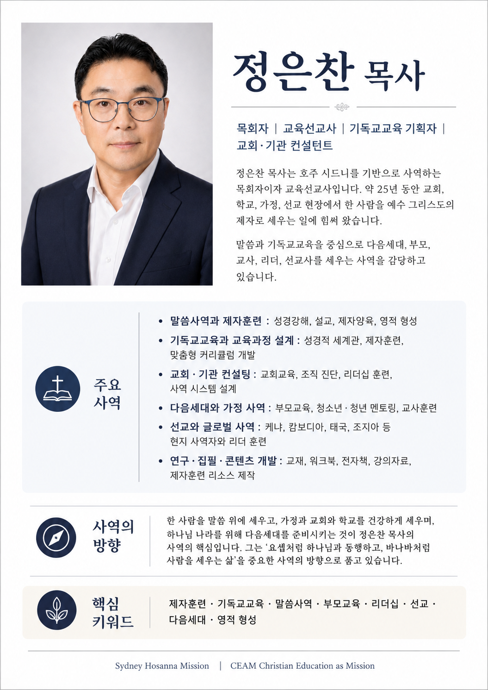

말씀 · 교육 · 다음세대  정은찬 목사JOSEPH 목회자 · 교육선교사 시드니에서 말씀과 교육으로한 사람을 그리스도의 제자로 세웁니다. 전화 문자 이메일 +61 435 762 262 (호주)josephjeong37@gmail.com 소개걸어온 길 주요 사역사역 분야 사역 방향비전과 가치 아이콘을 누르면 자세히 보실 수 있습니다. ＋ 프로필 연락처 저장하기 Sydney Hosanna MissionCEAM Christian Education as Mission